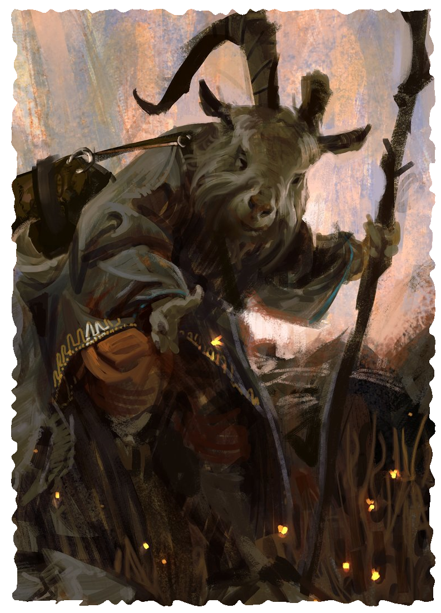

BEASTMEN
According to legend, the beastmen rejected the gods of the Old Faith in a long-past age. For their blasphemies, the gods took from them the gift of the human form, rendering them little better than animals. The curse plunged the beastmen into madness and evil, impelling them to pledge service to the demons of the Void.
Fur and Blood These primitive and brutal beings fuse animalistic characteristics with humanoid forms. Beastmen are usually fur-covered and have the heads of beasts, such as goats, wolves, bears, rats, and bulls. Filth and dried blood cling to them, crusting on seeping wounds. Most common are the wolf-headed Vargr, who stand 6 to 8 feet tall and weight 200 to 600 pounds. The rat-headed Ysoki stand between 3 and 4 feet tall, weighing up to 250 pounds while the bull-headed Minotaur reach heights of 10 feet and weigh up to 750 pounds. They never live past 50 years.
Without Homeland Beastmen gather in wild places: deep forests, empty plains, and abandoned, ruined cities, where they raise profane altars. The largest gathering remains in the jungles in Zelt. Before the Empire’s collapse, they kept a careful eye on the movements of the “jungle abominations”. After the Demon Lord’s Shadow fell, many beastmen took to roving the lands, homeless, friendless.
Common Names Bas, Bristlehead, Dugan, Galfour, Jawaia, Redwood, Orla, Tohgar, Ukrit
CREATING A BEASTMAN
Starting Attribute Scores Strength 10, Agility 10, Intellect 7, Will 8. Raise one attribute by 2 and two other attributes by 1.
Attribute Modifiers equal to the score minus 10
Perception equals your Intellect score +1
Defense equals 5 + your Agility modifier
Health equals your Strength score
Healing Rate equals one-quarter your Health, round down
Size 1/2 or 1, Speed 12, Power 0
Damage 0, Insanity 0, Corruption 0
Language and Professions You speak the Common Tongue and a tongue unique to your tribe, which has no system of writing. Pick two professions.
Heritage Choose one of the following options.
- Minotaur
-
Bovine Empathy When you roll to handle a bull, ram, goat, or similar animal, you make the challenge roll with 1 boon.
Horns of Minos When you take the charge action, damage from your unarmed strikes increases to 1d6.
Sons of Baphomet You make rolls to maintain concentration with 1 boon. - Ysoki
-
Rodent Empathy When you roll to handle a rat, squirrel, beaver, or similar animal, you make the challenge roll with 1 boon.
Keen Nose You make Perception rolls with 1 boon if they rely on scent and 1 bane if they rely on sight.
Cornered Might While frightened, your melee attacks deal 1d6 extra damage. - Vargr
-
Canine Empathy When you roll to handle a wolf, dog, jackal, or similar animal, you make the challenge roll with 1 boon.
Relentless When you take the Charge, Rush, or Retreat action, your base speed increases by 4 yards.
Pack Fighting If you attack a surrounded foe, you make the attack with 1 additional boon.
LEVEL 4 EXPERT BEASTMAN
Characteristics Health +6
You either learn one spell or gain Shake It Off:
Shake It Off You can use an action to heal damage equal to your healing rate and remove one of the following afflictions: fatigued, impaired, or poisoned. Once you use this talent, you cannot use it again until after you complete a rest.